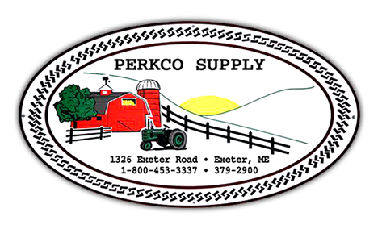

Perkco Supply inc.

Perkco Supply is a hardware, agricultural supply, and feed store located in rural Exeter, Maine.
Perkco Supply is locally owned and operated and has been serving central Maine through the store and deliveries for over 30 years.
We strive ourselves on great customer service, a welcoming environment, and stocking our shelves with the quality products that you are looking for!
We have a variety of different products for your different needs. Some examples of our various products are, animal and livestock feeds & supplies, lawn care supplies,
pluming and electrical supplies, and all the different hardware necessities you can think of.
| Sunday |
Mon-Fri |
Saturday |
| CLOSED |
7am-5pm |
7am-12noon |
Call Anytime! We Would be Happy to Help. 207.379.2900
| Perkco Supply inc.
|
| 1326 Exeter Rd, Exeter, Maine
|
| 1.800.453.3337
|
| 207.379.2900
|
| Map to Perkco!
|